Traditional festival · Ahafo
Addae Tuntum
Kukuom remembers the Ebirimoro war with the Sefwi, and renews its loyalty to its chief.
- WhenUsually January, sometimes December
- WhereKukuom
- Kept byThe chiefs and people of Kukuom
Most festivals are kept by a town and its chiefs, who set the date close to the day.
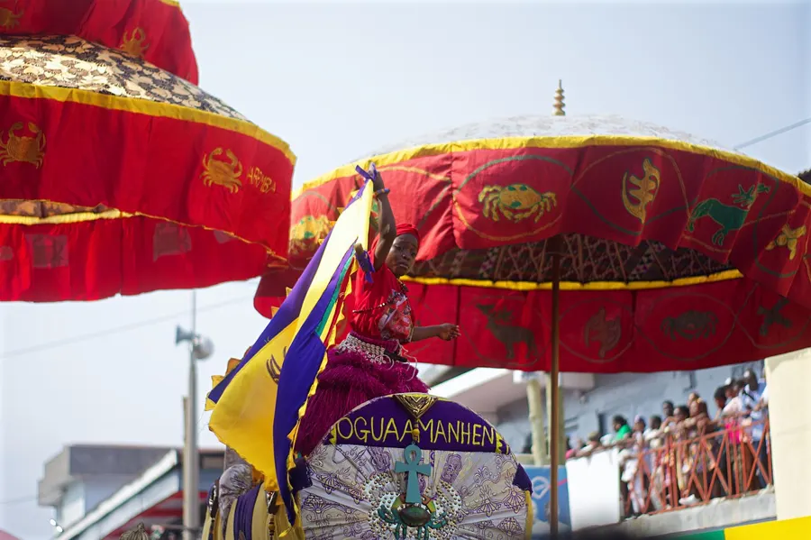
46 festivals and
cultural events listed
A growing list, not a complete one: most towns and traditional areas keep a festival of their own. Know one we haven’t listed? Tell us about it.
Traditional festival · Ahafo
Kukuom remembers the Ebirimoro war with the Sefwi, and renews its loyalty to its chief.
Traditional festival · Central
Elmina’s own “Christmas”, born of its Dutch years, with rites at the Benya Lagoon and chiefs in palanquins.
Bronya is the local word for Christmas; families come home for it.
Traditional festival · Upper East
Navrongo’s thanksgiving at the end of the farming season, with a durbar, drumming and war dances.
Traditional festival · Upper West
Tumu’s harvest thanksgiving, with farm produce on show, a durbar of chiefs, drumming and dance.

Cultural event · Central
Five masquerade clubs in masks and costumes march and dance for the prize on New Year’s Day.
Traditional festival · Oti
Bowiri remembers its journey from Moree: a week of rites, a climb to the old settlement and a grand durbar.
Traditional festival · Volta
A week of thanksgiving at Afife that remembers the Anlo-Ewe migration, ending in war dances and bonfires.
Traditional festival · Bono East
A week when people may sing out their grievances against chiefs and leaders, to cleanse the town.
Traditional festival · Greater Accra
Tema’s festival at the Sakumo lagoon: two days of rites, processions and prayers for fish and food.
Traditional festival · Oti
A week of peace that closes the Bowiri year: river bathing at dawn, white clay and a durbar.
Traditional festival · Savannah
The Gonja fire festival: torches carried at night to the edge of town, and readings for the year ahead.
Cultural event · Eastern
Ghana’s biggest homecoming: Easter on the Kwahu ridge, with paragliding off the Odweanoma mountain.
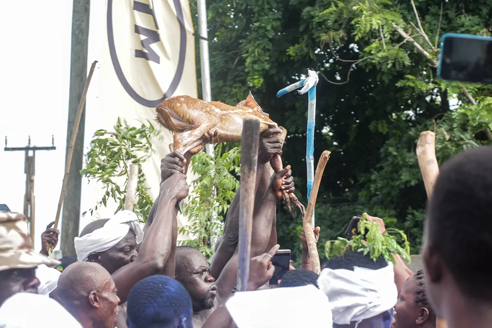
Traditional festival · Central
Two Asafo companies race to catch a live bushbuck with sticks and bare hands, an offering to the god Penkye Otu.
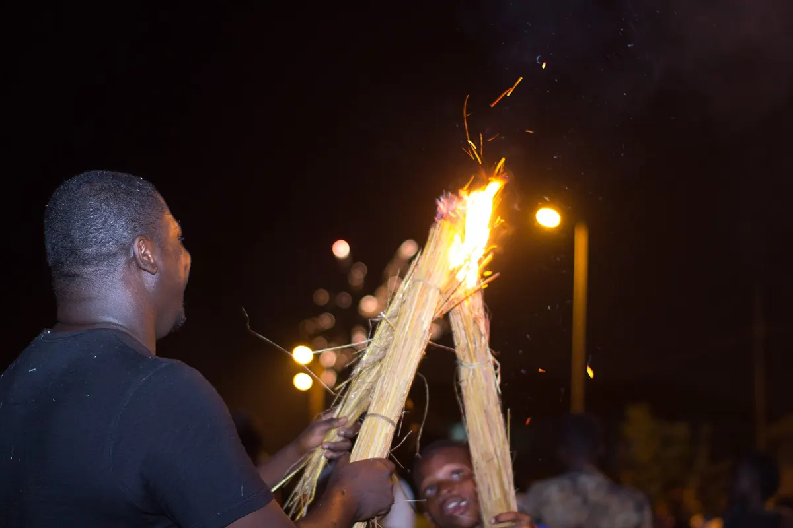
Traditional festival · Northern
The Dagomba new-year fire festival: torches carried through the streets and out of town at night.
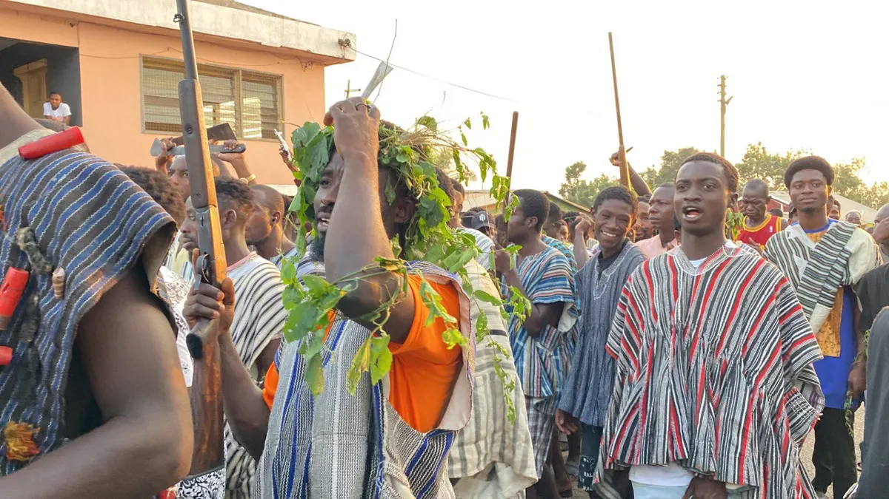
Traditional festival · Eastern
Akyem thanksgiving for the yam harvest and the Birim river, held twice a year after two weeks of silence.
Traditional festival · Greater Accra
Ada’s warriors’ festival: Asafo companies re-enact old battles, with musketry and a durbar of chiefs in palanquins.
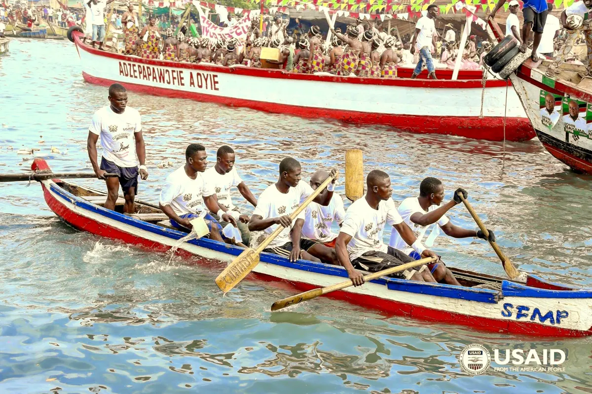
Traditional festival · Central
Elmina opens the Benya lagoon: the chief casts a net three times, then come the regatta and a durbar at the castle.

Traditional festival · Western
The harvest festival of the Ahanta and Nzema, moving from town to town along the western coast.
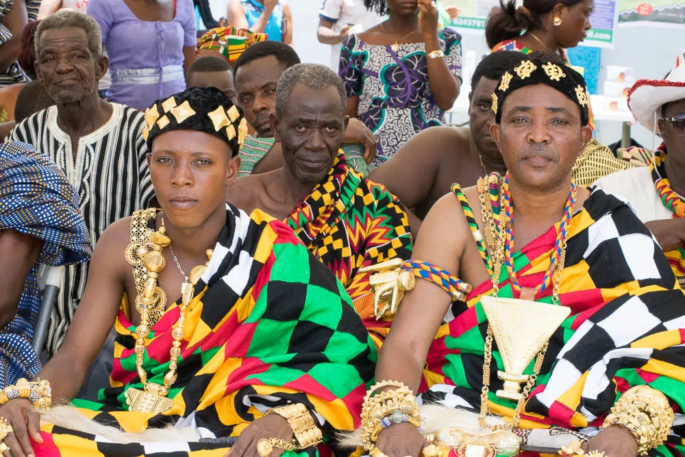
Traditional festival · Volta
The Kente festival of Agotime: weaving contests and chiefs in their finest cloth.
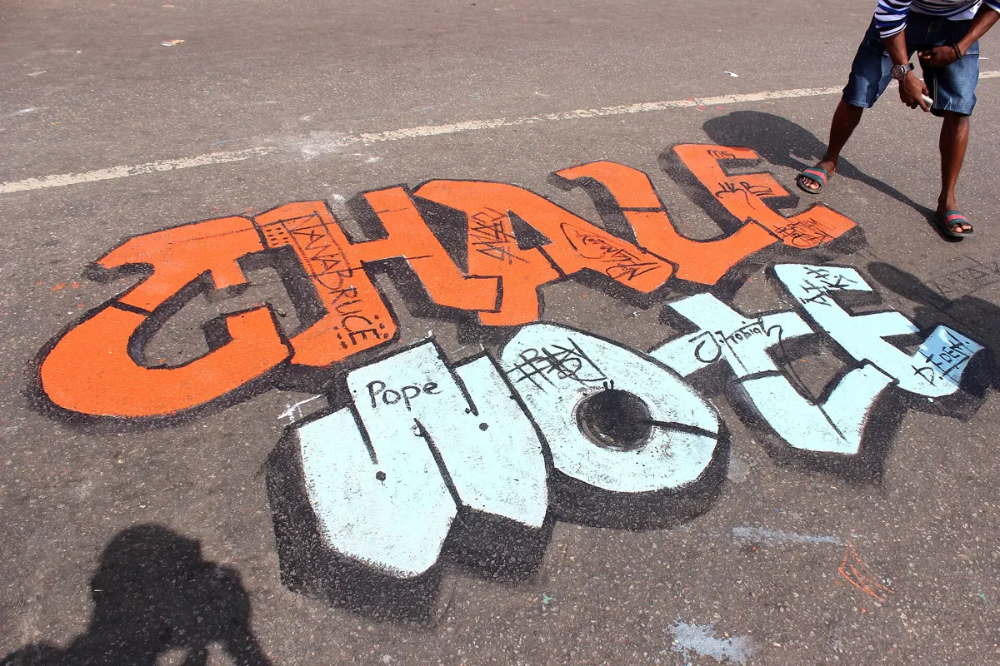
Cultural event · Greater Accra
Accra’s street art festival: murals, performance, music and film in the streets of James Town and beyond.
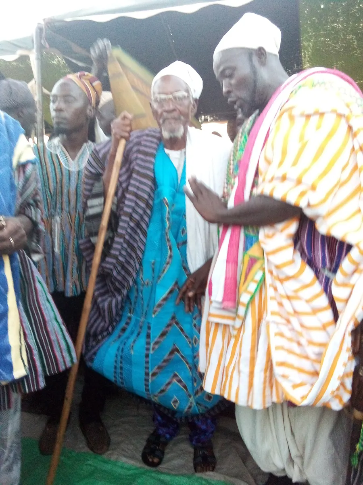
Traditional festival · Northern
Drumming, smocks and chiefs on horseback, in the month that marks the Prophet’s birth.
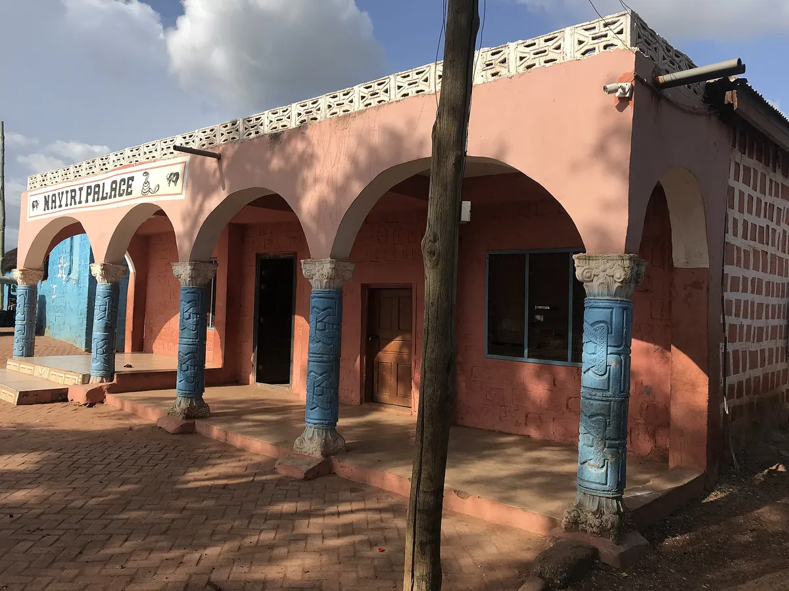
Traditional festival · North East
Mamprugu’s great gathering: chiefs from across the kingdom, dances through the night and the Nayiri at sunrise.
Traditional festival · Oti
The Adele new yam festival: offerings of mashed yam on the mountain, then yam fufu and dancing at home.
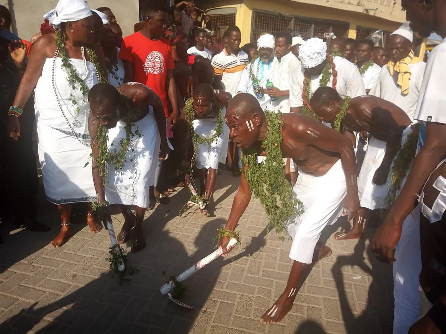
Traditional festival · Greater Accra
“Hooting at hunger”: kpokpoi is shared and sprinkled for the ancestors.
Traditional festival · Ashanti
Ejisu honours Nana Yaa Asantewaa, the queen mother who led the 1900 war against the British.
Traditional festival · Ahafo
Hwidiem remembers its migration from Denkyira Ntomu, with a durbar of chiefs, drumming and dancing.
Traditional festival · Volta
The yam festival of the Asogli State at Ho, honouring the hunter said to have found the first yam.

Traditional festival · Central
Cape Coast’s week of cleansing and thanksgiving, with Asafo companies, state umbrellas and a grand procession.
Traditional festival · Oti
The Akyode yam festival: the stool blesses the new yam, chiefs swear to the chief priest, and the night is for dancing.
Traditional festival · Upper West
Lawra’s harvest festival, famous for its dance competition to kuor drums and ankle bells.
Traditional festival · Oti
Krachi and its yam-growing neighbours give thanks for the harvest, with masquerades and yam pounded in the open.
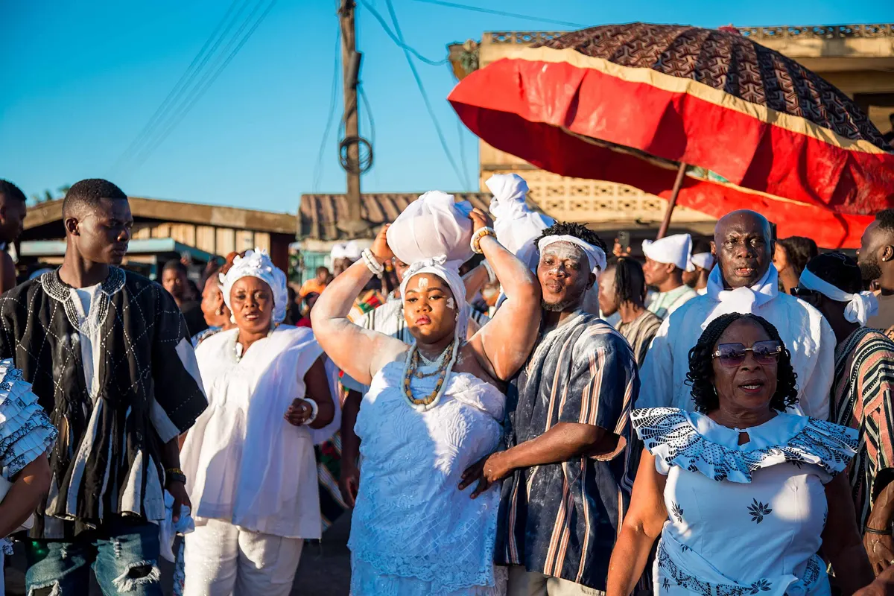
Traditional festival · Eastern
Akuapem’s week of purification and the new yam, remembering the 1826 victory at Katamanso.
Traditional festival · Oti
The Buem yam festival: three weeks of rites in the towns, then a grand durbar at Bodada.
Traditional festival · Western North
The Sefwi yam festival: a week of events that ends with a grand durbar of chiefs at Sefwi Wiawso.
Traditional festival · Bono East
A yam festival of thanks for the harvest, ending in a durbar of chiefs carried through the streets.
Traditional festival · Oti
Tapa remembers the battle at Frikooso hill, where its people and their allies turned back an Asante army.
Traditional festival · Volta
Aflao’s festival of liberation, remembering the escape from King Agorkoli’s rule at Notsie, with a grand durbar.

Traditional festival · Eastern
The Krobo millet festival and new year, with a pilgrimage to Krobo Mountain and a grand durbar.
Traditional festival · Volta
Four Volta towns of one origin renew their old friendship, taking turns to host a grand durbar.
Traditional festival · Ahafo
Bechem’s festival every two years: its history and culture on show, and funds raised for education and development.
Traditional festival · Eastern
New Juaben remembers its great migration from Juaben in Ashanti, with a procession and durbar in Koforidua.
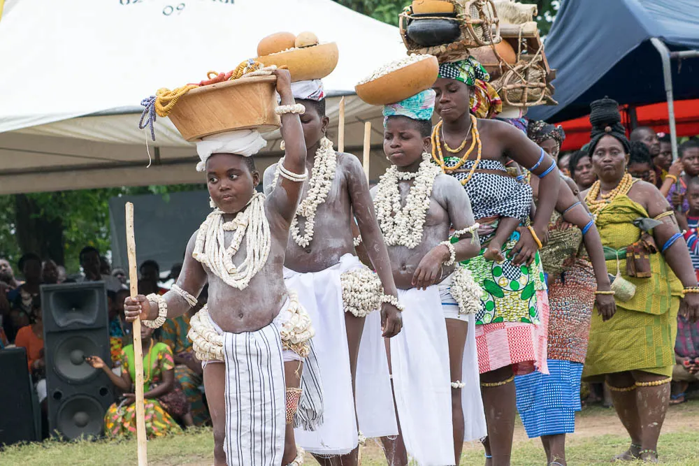
Traditional festival · Volta
The Anlo remember their escape from King Agorkoli at Notsie, walking backwards to hide their tracks.
Traditional festival · Oti
The Akposo thanksgiving for the fonio harvest, to God and the seven principal Akposo gods.
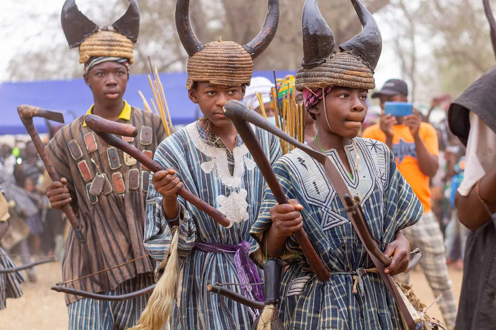
Traditional festival · Upper East
The Builsa remember their victory over the slave raider Babatu, with warriors in horned headdresses.
Traditional festival · Bono
A festival of fire and of putting the town in order, ending in a grand durbar at Dormaa Ahenkro.
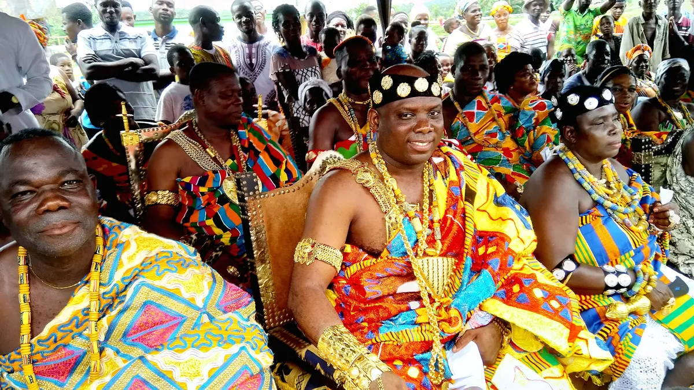
Traditional festival · Ashanti
The Asantehene sits in state at Manhyia and receives chiefs and visitors, every six weeks.
Tell us its name, the town, roughly when it falls and who keeps it. A link to a news report or a photo you took helps.
We check every suggestion against published sources before we add it, so it may take a little while to appear.
Suggest a festivalPhotos from Wikimedia Commons: Winneba Masquerade by Joy Agyepong (CC BY-SA 4.0), Kwahu Easter by Alhassan Sumaila (CC BY-SA 4.0), Aboakyer by Fquasie (CC BY-SA 4.0), Bugum by Shahadusadik (CC BY-SA 4.0), Ohum by Robertjamal12 (CC BY-SA 4.0), Bakatue by US Embassy in Ghana / USAID (public domain), Kundum by Assilidjoe (CC BY-SA 4.0), Agbamevoza by JY midey (CC BY-SA 4.0), Chale Wote by Fquasie (CC BY-SA 4.0), Damba by Bash222 (CC BY-SA 4.0), Damba in Nalerigu by Shahadusadik (CC BY-SA 4.0), Homowo by Agbleyjill (CC BY-SA 4.0), Fetu Afahye by Bright Kwame Ayisi (CC BY-SA 4.0), Odwira by Duncanoff (CC BY-SA 4.0), Ngmayem by Fquasie (CC BY-SA 4.0), Hogbetsotso by JY midey (CC BY-SA 4.0), Fiok by Christian Yakubu (CC BY-SA 4.0), Akwasidae by Paul5263 (CC BY-SA 4.0). Full credits on the photo credits page.